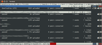

transmission-daemon
Dieser Artikel wurde für die folgenden Ubuntu-Versionen getestet:
Ubuntu 16.04 Xenial Xerus
Ubuntu 14.04 Trusty Tahr
Zum Verständnis dieses Artikels sind folgende Seiten hilfreich:
Der transmission-daemon ist ein BitTorrent-Client für Torrent- und Magnet-Links wie das bekanntere und in jeder Ubuntu-Installation enthaltene grafische Programm Transmission. Allerdings läuft transmission-daemon nach der Installation als eigenständiger Dienst mit einem eigenen Benutzerkonto und besitzt keine eigene Oberfläche. Der Zugriff erfolgt über eine integrierte Weboberfläche, die Fernsteuerung transgui oder auf der Kommandozeile. Transmission-daemon eignet sich also vor allem für den Einsatz auf Servern.
Installation¶
Die Installation[1] erfolgt mit folgendem Paket:
transmission-daemon
 mit apturl
mit apturl
Paketliste zum Kopieren:
sudo apt-get install transmission-daemon
sudo aptitude install transmission-daemon
Einrichtung¶
Bevor man den Dienst konfigurieren kann, muss er angehalten werden[2]:
sudo service transmission-daemon stop
Nun kann man mit einem Editor[3] mit Root-Rechten[4] die Konfigurationsdatei /etc/transmission-daemon/settings.json bearbeiten. Um den Dienst komfortabel über das Netzwerk fernzusteuern, stellt man folgende Zeilen mit diesen Werten ein:
{
...
"rpc-authentication-required": false, # Hier kann auch "true" eingegeben werden, wenn man das optionale Passwort nutzen möchte.
...
"rpc-enabled": true,
"rpc-password": "optionales Passwort",
"rpc-port": 9091, # Hier kann auch ein anderer Port eingestellt werden, entsprechend ändert sich der Port in den Arbeitsschritten weiter unten.
"rpc-username": "benutzername", # Hier bitte den Benutzernamen eingeben, mit dem man sich in die transmission-daemon-Sitzung einloggen möchte.
"rpc-whitelist": "127.0.0.1,weitere-ip-Adresse,weitere-ip-Adresse", # an dieser Stelle durch Kommata getrennt alle IP-Adressen für den Zugriff eintragen.
"rpc-whitelist-enabled": true,
...
}Im Anschluss den Dienst wieder neu starten:
sudo service transmission-daemon start
transmission-daemon steuern¶
Weboberfläche¶
| Weboberfläche im Browser |
Der im Dienst integrierte rpc-Zugriff erfolgt von jedem Rechner mit einer in der Konfiguration eingetragenen IP-Adresse über den Browser. Dazu wird in der Adresszeile des Browsers folgende URL eingetragen: http://ip-Adresse-des-Servers:9091/transmission/web/ . Wäre der transmission-daemon auf dem lokalen Rechner installiert, kann man auch http://127.0.0.1:9091/transmission/web/ nutzen.
Transmission Remote GUI¶
| transgui |
Ebenfalls sehr bequem lässt sich transmission-daemon auch über das Programm Transmission Remote GUI  fernsteuern. Dieses wird mit dem gleichnamigen Paket auf dem Rechner, von dem aus man transmission-daemon fernsteuert, installiert[1].
fernsteuern. Dieses wird mit dem gleichnamigen Paket auf dem Rechner, von dem aus man transmission-daemon fernsteuert, installiert[1].
transgui (universe)
mit apturl
Paketliste zum Kopieren:
sudo apt-get install transgui
sudo aptitude install transgui
Terminal¶
|  |
| Kommandozeile |
Für die Fernsteuerung von transmission-daemon im Terminal[2] gibt es auch das Python-Skript transmission-remote-cli , das heruntergeladen und z.B. im Ordner ~/bin/ im Homeverzeichnis gespeichert wird. Danach startet man es mit:
transmission-remote-cli.py -c ip.adresse.des.servers:port
Man kann auch mit folgendem Befehl die Konfigurations-Datei ~/.config/transmission-remote-cli/settings.cfg anlegen:
transmission-remote-cli.py --create-config
Bevor man die ~/.config/transmission-remote-cli/settings.cfg bearbeitet, muss das Python-Skript unbedingt wieder beendet sein. Nun kann man hier direkt die IP des Servers, den Port und alle anderen Angaben machen:
port = 9091 # bzw. der Port, der oben für transmission-daemon konfiguriert wurde host = ip.adresse.des.servers
Wer mag, kann im Abschnitt [Colors] auch die Farben des Programms anpassen. Wenn die Konfigurations-Datei abgespeichert ist, kann man das Skript bequemer über den Befehl:
transmission-remote-cli.py
starten und den Operator -c IP-ADRESSE weglassen.
Die wichtigsten Tastaturbefehle stehen immer in der obersten Zeile. Hier nur die wichtigsten:
| Taste/n | Bedeutung | Taste/n | Bedeutung |
| ↑ ↓ | in der Torrent-Übersicht auf / ab scrollen | ← → | in der Torrent-Detail-Ansicht nach links / rechts scrollen |
| → | von einem in der Übersicht angewählten Torrent in die Detail-Ansicht gehen | ⌫ | von der Detail-Ansicht zur Übersicht gehen |
| A | einen Torrent öffnen | R | einen Torrent entfernen |
| ? | alle Tastaturbefehle anzeigen | Q | das Programm schließen |
Magnet-Links an den Dienst übergeben¶
Wäre es nicht bequem, beim Klick auf einen Magnet-Link diesen gleich an den Dienst übergeben zu können? Dafür gibt es im Blogbeitrag How to open magnet links on a remote transmission daemon with one click... ein Bash-Skript.
Um dieses Skript nutzen zu können, muss das Paket curl installiert sein:
curl
mit apturl
Paketliste zum Kopieren:
sudo apt-get install curl
sudo aptitude install curl
Das Skript:
1 2 3 4 5 6 7 8 9 10 11 12 13 14 15 | #!/bin/bash test -z $1 && echo "need magnet link! $0 <magnet link>" && exit -1 HOST=ip.adresse.des.servers PORT=Port (z.B. 9091) USER=Nutzer PASS=Passwort LINK="$1" # set true if you want every torrent to be paused initially #PAUSED="true" PAUSED="false" SESSID=$(curl --silent --anyauth --user $USER:$PASS "http://$HOST:$PORT/transmission/rpc" | sed 's/.*<code>//g;s/<\/code>.*//g') curl --silent --anyauth --user $USER:$PASS --header "$SESSID" "http://$HOST:$PORT/transmission/rpc" -d "{\"method\":\"torrent-add\",\"arguments\":{\"paused\":${PAUSED},\"filename\":\"${LINK}\"}}" |
Mit einem Editor[3] wird dieses Skript an einen beliebigen Ort gespeichert, z.B. ~/.scripts/magnet-remote.sh und an den entsprechenden Stellen werden Server-IP, Nutzername, Port, etc. eingetragen. Anschließend wird das Skript ausführbar gemacht.
chmod +x .scripts/magnet-remote.sh
Nun kann man in Firefox unter "Bearbeiten -> Einstellungen -> Anwendungen -> magnet" dieses Skript als Programm eintragen und damit wird jeder angeklickte Magnet-Link an den Server in dem Skript geschickt.
Links¶
Webseite
von Transmission und transmission-daemonInstall transmission daemon in Ubuntu Server and avoid write permission problems
- Blogbeitrag, 02/2014
- Erstellt mit Inyoka
-
 2004 – 2017 ubuntuusers.de • Einige Rechte vorbehalten
2004 – 2017 ubuntuusers.de • Einige Rechte vorbehalten
Lizenz • Kontakt • Datenschutz • Impressum • Serverstatus -
Serverhousing gespendet von